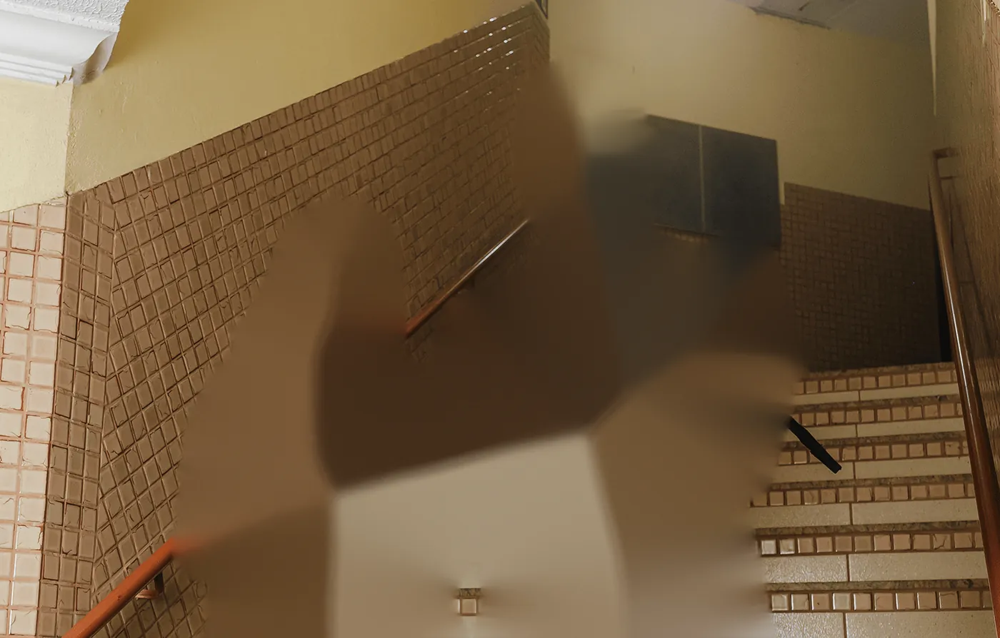

Fusion 48 MP · Abertura variável
De f/1.4 a f/4. Arraste.

f/1.4
Design
Uma peça só, mais leve e mais fria ao toque, com a borda polida que dissipa calor.
Tela
A Ilha Dinâmica encolheu. Sobra mais tela e menos distração.
Câmeras
Três câmeras de 48 MP alinhadas num bloco que atravessa o aparelho.
Cada detalhe foi repensado. O corpo é mais fino, a bateria é maior e a câmera enxerga no escuro como nunca. Tudo movido pelo chip A20 Pro, o primeiro feito em 2 nanômetros.
Chip A20 Pro
Processo de 2 nm, câmara de vapor redesenhada e um Neural Engine pensado para rodar a Apple Intelligence inteira no aparelho.
Números ilustrativos do conceito, comparados ao A19 Pro.
Sistema de câmeras Pro
A câmera principal ganhou abertura variável de verdade. Você decide quanto fundo desfocar, direto no sensor.
Fusion 48 MP · Abertura variável

Teleobjetiva 48 MP
Arraste ou use a rodinha do mouse na foto.
Vídeo
Dolby Vision a 60 qps, gravado em ProRes RAW.
Câmera frontal
Sensor quadrado. Selfie na vertical ou na horizontal sem girar o aparelho.
Pouca luz
Mais luz captada à noite com o novo sensor empilhado.
Acabamentos
Alumínio anodizado com vidro fosco texturizado na traseira. Toque numa cor para girar o aparelho.
Azul Céu
E tem mais
Bateria
Célula de maior densidade e um chip que gasta menos. Termina o dia com folga.
Conectividade
Sinal mais estável em 5G, menos consumo e conexão por satélite quando não há cobertura.
Segurança
Os sensores ficam debaixo da tela. Desbloqueia igual, sem roubar espaço.
Controle da Câmera
O botão lateral agora sente pressão e deslize com mais precisão. Zoom, exposição e abertura num gesto.